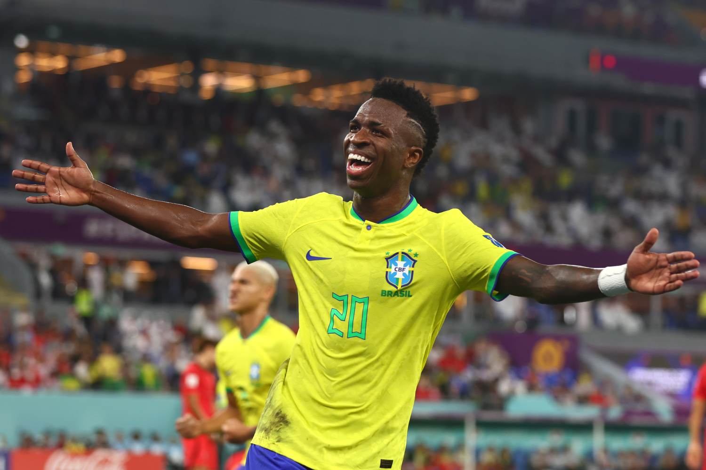

- Feijoada (Brasil)
- Empanadas (Argentina)
- Croissant (Françã)
Atacantes destaques:
Kylian Mbappé:
Vinícius Junior:

Harry Kane:

A Copa do Mundo é uma competição internacional organizada pela Federação Internacional de Futebol a cada quatro anos. A Copa passou a ser realizada em 1930, com a primeira competição sediada pelo Uruguai. A escolha da nação-sede é determinada em eleições feitas pela própria Fifa.
A Copa do Mundo de futebol acontece a cada quatro anos. Esse intervalo é mantido tanto para o torneio masculino quanto para o feminino, ocorrendo de forma alternada com um ano de diferença entre eles.
| País | Continente | Títulos |
|---|---|---|
| Brasil | América do sul | 5 |
| Alemanha | Europa | 4 |
| Argentina | América do sul | 3 |
Brasil: Música e Dança: O Samba é o maior símbolo nacional, com raízes africanas que se espalharam do Rio de Janeiro para o mundo. No Nordeste, destaca-se o Frevo, uma dança frenética de Recife que usa pequenas sombrinhas coloridas e passos acrobáticos. Costumes: O brasileiro é conhecido por ser caloroso e apreciar demonstrações físicas de afeto, como abraços. O Carnaval é a festa máxima, unindo música, dança e religiosidade em celebrações que param o país.
Alemanha: Música e Dança: Além da herança da música erudita (como Beethoven e Bach), o folclore alemão é rico em danças como a Schuhplattler, onde os homens batem ritmadamente nos pés e joelhos. Na cena moderna, o país é um polo global de música eletrônica e techno. Costumes: A pontualidade e a formalidade são valores centrais. Trajes típicos como o Lederhosen (calças de couro) e o Dirndl (vestido) ainda são usados com orgulho em festivais como a Oktoberfest.
Espanha: Música e Dança: O Flamenco é a expressão máxima, declarada Patrimônio da Humanidade. É uma arte complexa que une canto (cante), toque de guitarra e dança (baile), carregada de dramaticidade e influência cigana e árabe. Costumes: A rotina espanhola é famosa pelos horários tardios; jantares costumam ocorrer após as 22h. A Siesta (descanso após o almoço) e o hábito de comer Tapas (pequenas porções compartilhadas) são pilares da socialização espanhola.
Argentina: Música e Dança: O Tango define a identidade argentina, especialmente em Buenos Aires. Surgiu nos bairros portuários e evoluiu de uma dança marginal para um símbolo de elegância e melancolia. Costumes: O cumprimento com beijinhos no rosto, inclusive entre homens, é muito comum. A cultura das cafeterias e as conversas apaixonadas sobre política e futebol em espaços públicos são marcas registradas do cotidiano argentino.
Françã: Música e Dança: A França valoriza a Chanson Française e estilos coreografados. Culturalmente, o país é um centro de moda e artes visuais, com o hábito frequente de visitar museus e teatros. Costumes: Os franceses prezam pela etiqueta à mesa e pela separação clara entre vida pessoal e profissional. Um costume típico é o "faire la bise" (beijinhos no rosto ao cumprimentar amigos), cujo número varia conforme a região.
Kylian Mbappé:
Vinícius Junior:

Harry Kane: